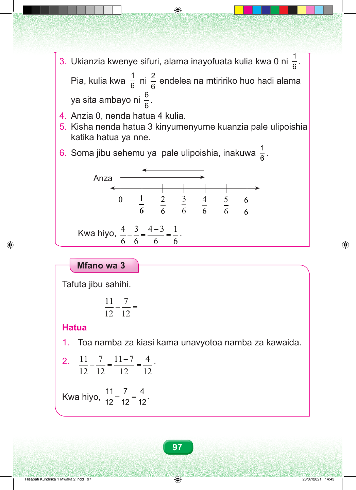

Maelezo ya mchoro wa mstari wa namba. Mstari unaanzia sifuri na umegawanywa katika sehemu sita sawa, kuanzia moja ya sita hadi sita ya sita. Hatua ya tatu. Ukianzia sifuri, alama ya kwanza kulia ni moja ya sita. Endelea kuweka alama mbili ya sita, tatu ya sita, nne ya sita, tano ya sita, hadi sita ya sita. Mwisho wa mstari ni sita ya sita. Hatua ya nne. Anzia sifuri, nenda hatua nne kulia hadi nne ya sita. Hatua ya tano. Kutoka nne ya sita, rudi nyuma hatua tatu. Rudi kuelekea upande wa kushoto kwenye mstari wa namba. Hatua ya sita. Soma sehemu ulipoishia. Ni moja ya sita. Kwa hiyo, nne ya sita kutoa tatu ya sita, sawa sawa na moja ya sita. Mfano wa Tatu Tafuta jibu sahihi. Kumi na moja ya kumi na mbili kutoa saba ya kumi na mbili, sawa sawa na ngapi? Hatua. Hatua ya kwanza. Toa namba za kiasi kama unavyotoa namba za kawaida. Kumi na moja kutoa saba, sawa sawa na nne. Hatua ya pili. Asili haibadiliki; inabaki kumi na mbili. Kwa hiyo, kumi na moja ya kumi na mbili kutoa saba ya kumi na mbili, sawa sawa na nne ya kumi na mbili. 97 Hisabati Kundirika 1 Mwaka 2.indd 97 23/07/2021 14:43